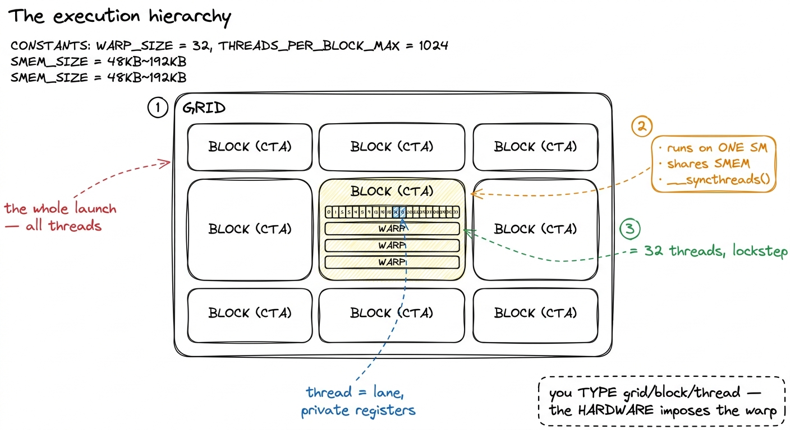
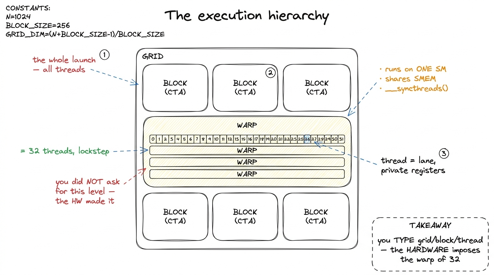
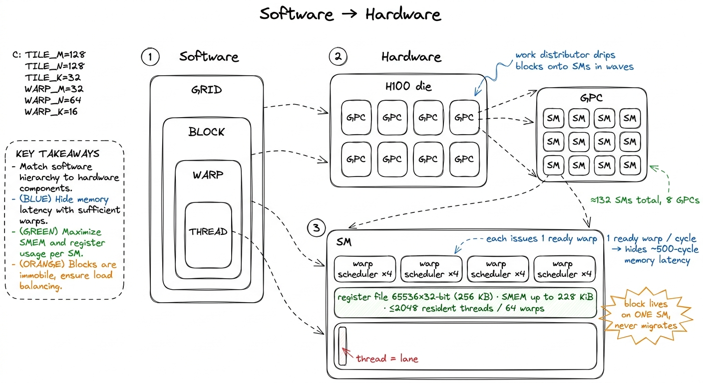
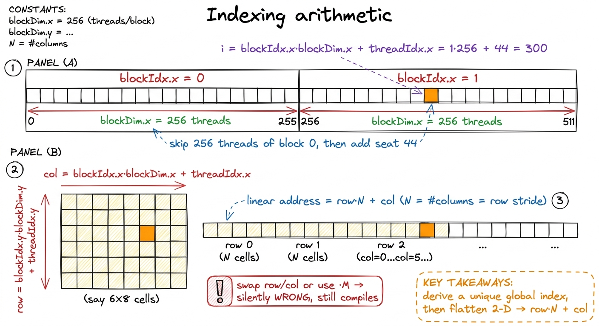

Threads, warps, blocks, grids
Every CUDA kernel I write launches thousands to millions of threads, and every one of those threads runs the same function. That is the whole trick and the whole difficulty at once: I write one function, the hardware runs it a million times with a different identity each time, and my entire job is to compute — from that identity — which slice of the problem this thread owns. The first time I got the indexing arithmetic wrong, the kernel compiled cleanly and produced silently wrong numbers; the first time I got the grouping wrong, it was correct but three times too slow. So before I optimize anything, I want to be fluent in the four-level hierarchy the model hands us — thread, warp, block, grid — and, more importantly, in how each level lands on physical silicon.
This article is the map I keep coming back to. No profiling yet, no GEMM ladder — just the mental model that makes every later worklog legible.
The four levels, top to bottom
CUDA gives you a software hierarchy with three names you type and one the hardware imposes on you whether you like it or not.
A grid is the entire launch: every thread created by one kernel<<<grid, block>>> call. You never see all of it at once; it is just the set.
A block — formally a Cooperative Thread Array (CTA) — is a group of threads that are guaranteed to run together on one SM, share a scratchpad of on-chip shared memory, and can synchronize with __syncthreads(). A block is the unit of cooperation. Threads in different blocks cannot cheaply talk to each other at all.1 Hopper adds a level between block and grid: the thread-block cluster (sm_90a), a set of blocks co-scheduled on one GPC that can read each other's shared memory through the distributed-shared-memory (DSMEM) network. It is opt-in and does not change the four-level story below — it inserts a fifth, optional rung.
A thread is the smallest unit: its own program counter, its own private registers, its own slice of the output.
And then there is the level you did not ask for. The hardware silently chops every block into warps of exactly 32 threads. A warp is the true unit of execution — all 32 lanes issue the same instruction in the same cycle, on 32 different data elements. This is the "SIMT" (single-instruction, multiple-thread) execution model, and the number 32 is not a suggestion. It is baked into the scheduler, the register file layout, and the memory coalescer. Almost every performance rule on this site is downstream of that one constant.

figure rendering · The four software levels plus the warp the hardware forces on you. TheWhere each level lands on the H100
The hierarchy is not an abstraction floating above the metal — it is a fairly literal description of it. Here is the mapping, and it is worth memorizing because every optimization is really a statement about one of these arrows.
A thread maps to a lane — one slot in the SM's datapath, with a private allocation of registers carved out of the SM's 256 KB register file (65536 32-bit registers per SM, at most 255 per thread).2 "Private to each thread" has exactly one exception on modern hardware: warp-shuffle intrinsics like __shfl_sync let a lane read another lane's register within the same warp, and tensor-core / wgmma instructions read fragments spread across a whole warp's registers. Across warps, registers are genuinely inaccessible.
A warp maps to a warp scheduler. Each SM on an H100 has four warp schedulers, and each can issue an instruction from one ready warp per cycle. This is the beating heart of GPU performance: a scheduler holds many resident warps and, every cycle, picks one that is not stalled and issues it. When warp A is waiting ~500 cycles on an HBM load, the scheduler issues warp B, then C, then D. The memory latency never disappears — it is hidden behind other warps' work. This is why GPUs tolerate enormous memory latency that would cripple a CPU.
A block maps to a Streaming Multiprocessor (SM) — one of the H100's ~132 SMs, distributed across 8 Graphics Processing Clusters (GPCs). The block runs on exactly one SM for its whole life; it never migrates. Its shared memory is carved out of that SM's 256 KiB combined SMEM+L1 (up to 228 KiB usable as SMEM), and its threads' registers come out of that SM's register file. An SM can hold several blocks at once if their combined resource demands fit.
A grid maps to the whole GPU. The blocks of a grid are handed out to SMs by a hardware work distributor as SMs free up; with far more blocks than SMs, they drain through in waves.

figure rendering · The mapping you must memorize: thread→lane, warp→scheduler, block→SM,Computing "who am I": the indexing arithmetic
Because every thread runs the same code, the first thing any kernel does is figure out its own identity from the built-in variables CUDA injects: threadIdx (position within the block), blockIdx (which block), and blockDim (the block's shape). Each is a dim3 with .x, .y, .z fields.
The canonical one-dimensional index — thread's position across the entire grid — is:
int i = blockIdx.x * blockDim.x + threadIdx.x;Read it as: skip past all the blocks before me (blockIdx.x of them, each blockDim.x threads wide), then add my offset inside my own block. If block 0 is threads 0–255, block 1 is 256–511, and so on, this arithmetic hands each thread a unique, contiguous global index. For a 2-D problem like a matrix you compute a row and a column the same way on each axis:
int row = blockIdx.y * blockDim.y + threadIdx.y;
int col = blockIdx.x * blockDim.x + threadIdx.x;
if (row < M && col < N) { // guard the ragged edge
C[row * N + col] = /* ... */; // row-major linear index
}Two details in that snippet are load-bearing. First, the bounds check. Your grid almost never divides the problem evenly, so you round up — CEIL_DIV(N, blockDim.x) blocks — which launches slightly too many threads; the if kills the overhang so it does not scribble past the array.3 The idiom (N + B - 1) / B is integer-ceiling division. Launching a hair too many threads and masking the excess is universal and essentially free — a predicated branch that the whole warp takes together costs nothing when the condition is uniform. Second, the flattening: memory is one-dimensional, so a 2-D coordinate becomes row * N + col for a row-major array. Getting the stride wrong here (* M instead of * N, or swapping row and col) is the single most common CUDA bug, and it compiles perfectly.

figure rendering · Each thread derives a unique global index from blockIdx, blockDim, thrChoosing the block size: multiples of 32, and never more than 1024
Now the practical question: how big should a block be? Two hard rules and one soft one govern the answer.
Hard rule one: the block size must not exceed 1024 threads. This is a fixed hardware limit — blockDim.x * blockDim.y * blockDim.z ≤ 1024. Ask for more and the launch fails outright. So a 2-D block is at most 32×32, a 1-D block at most 1024.
Hard rule two: make the block a multiple of 32. Since the hardware slices blocks into warps of 32, a block of, say, 100 threads becomes four warps — three full ones and a fourth that is 28-lanes-wide of garbage padded up to 32. That fourth warp still occupies a full warp's worth of scheduler slots and register file while doing only 4/32 useful work. You have paid for a warp and used an eighth of it. Every sensible block size — 128, 256, 512 — is a multiple of 32 for exactly this reason.
The soft rule is where judgment enters: which multiple of 32? This is the occupancy question, and it is a resource-packing problem. An SM has a fixed budget — 256 KB of register file, 228 KiB of shared memory, and a cap on resident warps — and it fits as many blocks as those budgets allow. If each thread burns 64 registers, then 65536 / 64 = 1024 threads' worth of registers exist per SM, so at most 1024 threads (say, four 256-thread blocks or two 512-thread blocks) can be resident regardless of the warp cap. Ask for 128 registers per thread and you halve that. Occupancy is the ratio of resident warps to the SM's maximum, and it is the knob that controls how much latency the schedulers can hide.4 More occupancy is not automatically better. Past the point where the schedulers always have a ready warp, extra occupancy buys nothing and may hurt — it forces the compiler to spill registers to local memory (an HBM round-trip) to fit more threads. The best kernels on the ladder often run at 50–60% occupancy with fat register allocations. Occupancy is a means, not the goal.
So block-size selection is a negotiation: bigger blocks amortize launch and give __syncthreads() more threads to cooperate, but they demand more registers and shared memory as a unit, and a block only becomes resident if the whole block's resources fit. A 256-thread block that needs more registers than remain simply waits. The default advice — 128 or 256 threads — exists because it packs cleanly into almost any register budget while still giving each scheduler several warps to juggle.

figure rendering · Block size is a resource-packing decision. Registers and shared memoryWhy this hierarchy, and where it goes next
When I step back, the design reads as coherent rather than arbitrary. The warp exists so 32 lanes can share one instruction fetch and one scheduler slot — cheap parallelism. The block exists so a group of warps can share a fast scratchpad and synchronize, enabling the tiling that makes GEMM fast. The grid exists so the work distributor can scale a launch across every SM without me thinking about it. Each level trades a little flexibility for a lot of hardware efficiency, and the whole thing is built so the schedulers always have another warp to run while the current one waits on memory — the three regimes in structural form.
Everything downstream leans on this. Coalescing is a statement about which lanes of a warp touch which addresses. Shared-memory tiling is a statement about what a block stages on-chip. Occupancy tuning is a statement about how many blocks an SM holds. When we start the GEMM ladder in earnest, the very first optimization — the jump from 1.3% to 8.5% of cuBLAS — is nothing but a one-line change to how we assign blockIdx and threadIdx to output elements so that a warp's 32 lanes read contiguous memory. That fix will make no sense without this map. With it, it is obvious. On to shared memory, the block-level scratchpad that turns this hierarchy into speed.